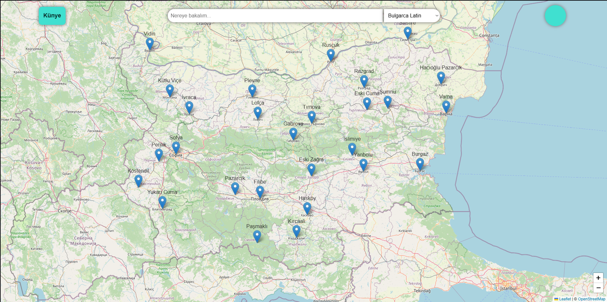
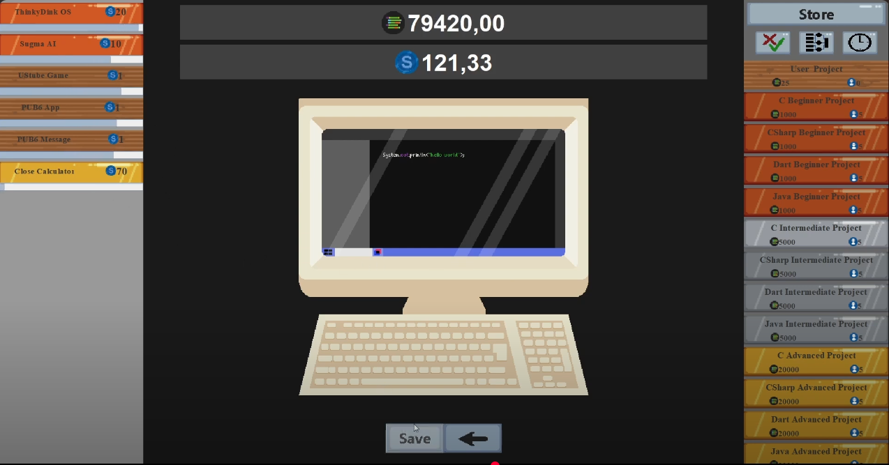
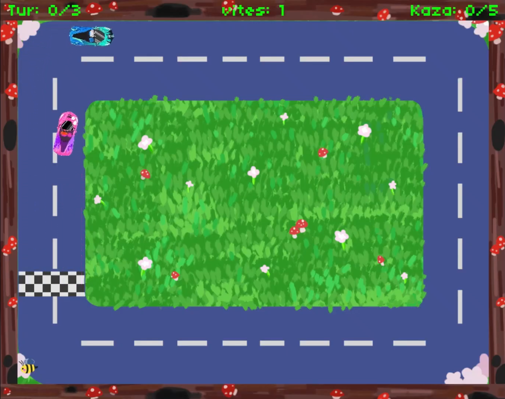

Merhaba, Ben Güneş Balcı. Yazılım Mühendisliği Öğrencisiyim.
3. sınıf öğrencisiyim ve 3,57 genel not ortalamasına sahibim. Kocaeli Üniversitesi STARLab'da takım üyesi olarak bulunmaktayım.
Oyun ve uygulama geliştirme konusunda tutkuluyum. Back-end geliştirme ve web teknolojileriyle çalışmaktan keyif alıyorum.
Problem çözme ve algoritma tasarlamaya olan ilgimle kendimi sürekli geliştirmeye odaklanıyorum.
20 iş günü süreli zorunlu stajımı tamamlamam gerekiyor.
Teknik Beceriler
Programlama ve Ön Yüz Dilleri
C, C#, Python, Java, HTML, CSS, Javascript
Geliştirme Ortamları
Unity, Visual Studio Code, Intellij IDEA
Çerçeveler
Blazor, .NET, Spring, Swing, Allegro5
Office uygulamaları
Microsoft 365, Libre Office
Versiyon Kontrol ve Proje Yönetimi
Git, Github, Trello, Jira
Veri Tabanı Yönetim Sistemleri
MySQL, MongoDB, PostgreSQL
Projeler
<
>
"YERLİ DİJİTAL OYUN MAĞAZASI VE OYUN BAŞLATICI PLATFORMU"
Nisan 2025 - Nisan 2026
TÜBİTAK 2209-A tarafından desteklenen bu proje, kullanıcıların oyun satın alabildiği, indirebildiği ve
başlatabildiği yerli ve çok platformlu bir dijital oyun mağazası uygulamasıdır.

"BULGARİSTAN’DA HARİTA BAZLI YER İSİMLERİ UYGULAMASI: TÜRKÇE - BULGARCA"
Mayıs 2024 - Günümüz
Türk köylerinin ve Bulgaristan’daki köylerin tarihi isimlerini gösteren bir web uygulamasıdır.

"SOFTVOPER: PASİF OYUN"
Ekim 2024 - Aralık 2024
Tamamen Java ile yazılmış pasif bir tıklama oyunudur. Bu oyunda Spring ve MongoDB teknolojileri kullanılmıştır.

"ARABA YARIŞI OYUNU"
Mayıs 2023 - Haziran 2023
Allegro 5 çerçevesi ile C dilinde yazılmış basit bir araba yarışı oyunudur.

Eğitim
Kocaeli Üniversitesi
(Yazılım Mühendisliği)
(Yazılım Mühendisliği)
Eylül 2022 - Günümüz
Halıcı Ahmet Urkay Anadolu Lisesi
Eylül 2017 - Haziran 2021
İş Tecrübesi
Defacto (Müşteri Danışmanı)
Haziran 2023 - Ağustos 2023
McDonalds (Kasiyer)
Haziran 2019 - Ağustos 2019
Dil
Türkçe (Anadil)
İngilizce (B1)
Hobi
Bilgisayar oyunu oynamak
Çizim yapmak
Müzik dinleme
Dizi izlemek
İletişim
Telefon Numarası
E-Posta
Adres
Beldibi Mahallesi 66. Sokak 19/4 48700 Marmaris/Muğla/TÜRKİYE
LinkedIn
Github